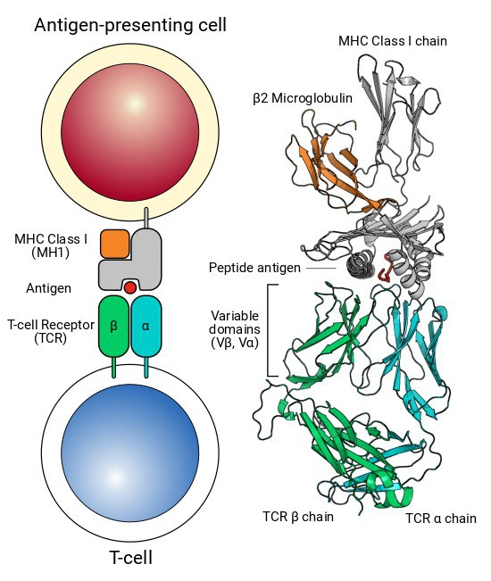
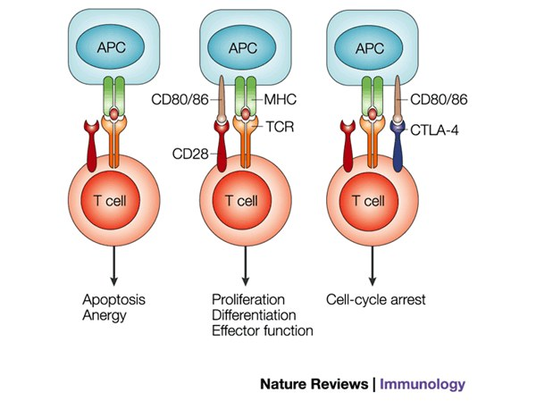
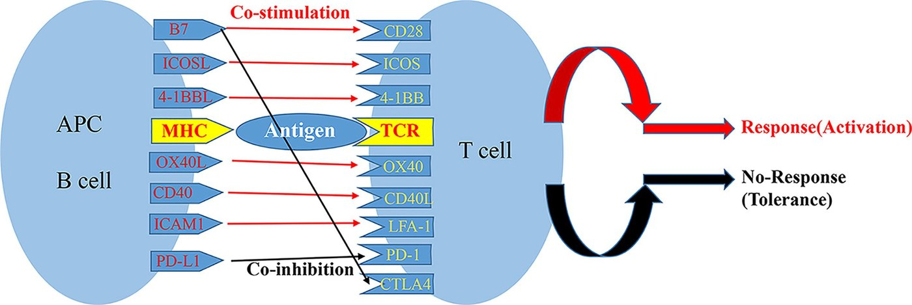
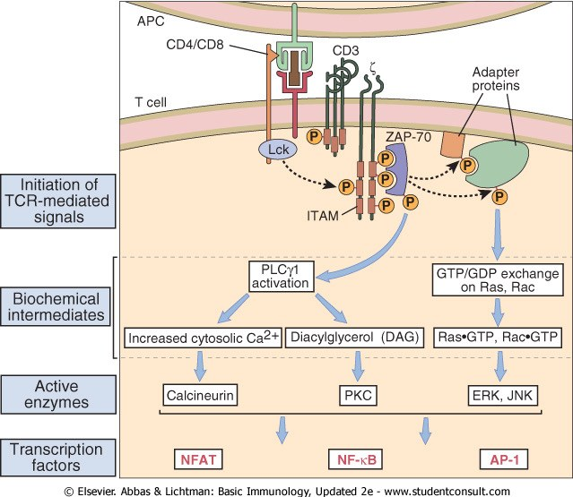
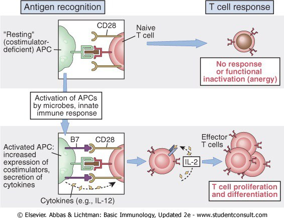

The Three Signals — How a T Cell Is Switched Onسه سیگنال — سلول T چگونه روشن میشود
A T cell that meets its antigen does not necessarily respond to it. It may respond, it may do nothing, or it may be permanently disabled by the encounter — and which of the three happens is decided not by the antigen but by a second molecule on the other cell. That is the most important idea in this Part, and it is the reason your immune system does not attack you.سلول Tای که آنتیژن خود را میبیند، لزوماً به آن پاسخ نمیدهد. ممکن است پاسخ دهد، ممکن است هیچ نکند، یا ممکن است با همان برخورد برای همیشه از کار بیفتد — و اینکه کدامیک رخ دهد نه با آنتیژن بلکه با مولکول دومی روی سلول مقابل تعیین میشود. این مهمترین ایدهٔ این بخش است و دلیل آنکه سامانهٔ ایمنی شما به خودتان حمله نمیکند.
By the end of this Part you should be able toدر پایان این بخش باید بتوانید
Name the molecule that provides each of the three signals, and the cell it sits on.مولکول فراهمکنندهٔ هر یک از سه سیگنال و سلولی که رویش نشسته را نام ببرید.
Explain what happens to a T cell that receives signal 1 without signal 2 — and why that is useful.توضیح دهید بر سر سلول Tای که سیگنال ۱ را بدون سیگنال ۲ بگیرد چه میآید — و چرا این سودمند است.
Distinguish CD28 from CTLA-4 by structure, timing, affinity and effect.CD28 را از CTLA-4 بر پایهٔ ساختار، زمانبندی، میل ترکیبی و اثر تمیز دهید.
Trace the TCR signal from ITAM to transcription factor, and name the drug that blocks it.پیام TCR را از ITAM تا عامل رونویسی دنبال کنید و دارویی را که مسدودش میکند نام ببرید.
2.1Signal 1 — the TCR Sees Peptide–MHCسیگنال ۱ — TCR پپتید–MHC را میبیند
Fig 2.1 Your lecturer's picture. Key start = signal 1 (the TCR): without it nothing happens at all. Gas pedal = signal 2 (costimulation): the key alone leaves the car standing. Steering = signal 3 (cytokines): it does not start the car, it decides where it goes.تصویر مدرّس شما. سوئیچ استارت = سیگنال ۱ (TCR): بدون آن اصلاً هیچ نمیشود. پدال گاز = سیگنال ۲ (همتحریکی): سوئیچ بهتنهایی خودرو را ایستاده رها میکند. فرمان = سیگنال ۳ (سایتوکاینها): خودرو را روشن نمیکند، تعیین میکند کجا برود.
Signal 1 is the specific signal: the T-cell receptor recognising a peptide held in the groove of an MHC molecule on another cell. Everything about how that peptide got into that groove is Part 3. What matters here is that signal 1 is necessary and not sufficient.سیگنال ۱ سیگنال اختصاصی است: شناسایی پپتیدی که در شیار مولکول MHC روی سلولی دیگر نگه داشته شده، توسط گیرندهٔ سلول T. اینکه آن پپتید چگونه به آن شیار رسیده، موضوع بخش ۳ است. آنچه اینجا اهمیت دارد این است که سیگنال ۱ لازم است اما کافی نیست.
Three molecules deliver it together, and you met all three in §1.5:سه مولکول با هم آن را میرسانند و هر سه را در بخش ۱.۵ دیدید:
CD4 or CD8S1 — grips the non-polymorphic part of the MHC molecule and brings Lck to the partyCD4 یا CD8 — بخش غیرچندشکلی مولکول MHC را میگیرد و Lck را به میدان میآورد

Fig 2.2 What signal 1 physically is. An antigen-presenting cell holds a peptide in the cleft of an MHC class I molecule (with its β₂-microglobulin); the TCR α and β chains reach up and read both the peptide and the walls of the cleft. The ribbon model on the right shows the same thing at atomic scale: the variable domains Vα and Vβ sit over the peptide exactly as VH and VL sit over an epitope in an antibody.سیگنال ۱ فیزیکی چیست. سلول عرضهکنندهٔ آنتیژن یک پپتید را در شکاف مولکول MHC کلاس I (همراه بتا-۲-میکروگلوبولینش) نگه میدارد؛ زنجیرههای α و β در TCR بالا میآیند و هم پپتید و هم دیوارههای شکاف را میخوانند. مدل نواری سمت راست همین را در مقیاس اتمی نشان میدهد: دومینهای متغیر Vα و Vβ دقیقاً همانطور روی پپتید مینشینند که VH و VL روی اپیتوپ در آنتیبادی.
2.2Signal 2 — Costimulation, and the Brakeسیگنال ۲ — همتحریکی، و ترمز
Pair 4 of 4CD28 ↔ B7-1 / B7-2CD28 ↔ B7-1 / B7-2
T cell TCD28 S2CD28Ig superfamily; present on resting T cellsاَبَرخانوادهٔ ایمونوگلوبولین؛ روی سلول T استراحتی حاضر
binds
APC APCCD80 (B7-1) · CD86 (B7-2)CD80 (B7-1) · CD86 (B7-2)Up-regulated only when the APC has itself been activated — by a PRR, by a PAMPفقط وقتی افزایش مییابد که خودِ سلول عرضهکننده فعال شده باشد — با یک گیرندهٔ شناساگر الگو، با یک PAMP
Result: the T cell receives permission and commits — proliferation, differentiation, effector function, and production of IL-2. The deep point is where B7 comes from: the APC only displays it after its own innate sensors have detected something dangerous. Signal 2 is therefore innate immunity's veto over adaptive immunity — it is the molecular answer to “is this antigen actually a threat?”.نتیجه: سلول T اجازه میگیرد و متعهد میشود — تکثیر، تمایز، عملکرد اجرایی، و تولید IL-2. نکتهٔ عمیق این است که B7 از کجا میآید: سلول عرضهکننده تنها پس از آنکه حسگرهای ذاتیِ خودش چیز خطرناکی را تشخیص دادند آن را نشان میدهد. پس سیگنال ۲ حق وتوی ایمنی ذاتی بر ایمنی اکتسابی است — پاسخ مولکولی به پرسش «آیا این آنتیژن واقعاً تهدید است؟».
What happens with signal 1 aloneبا سیگنال ۱ بهتنهایی چه میشود
Anergyآنرژی
Anergy is the state of a lymphocyte that has received signal 1 without signal 2. It is not simply “no response”: the cell survives but becomes functionally inactivated — unresponsive to that antigen even if it is later presented properly with full costimulation. The lecture calls this abortive T-cell activation.آنرژی حالت لنفوسیتی است که سیگنال ۱ را بدون سیگنال ۲ گرفته است. صرفاً «بیپاسخی» نیست: سلول زنده میماند اما از نظر کارکردی غیرفعال میشود — حتی اگر بعداً همان آنتیژن با همتحریکی کامل عرضه شود، پاسخ نمیدهد. درس آن را فعالسازی ناتمام سلول T مینامد.
Why the system is built this wayچرا سامانه اینگونه ساخته شده
Your own tissues present your own peptides on MHC constantly, and a resting tissue cell carries no B7. So a self-reactive T cell that escaped thymic selection will meet its self-antigen on a cell that cannot costimulate — and it is silenced by that meeting rather than activated by it. The requirement for two signals is not an inefficiency; it is peripheral tolerance, and it is the answer to the question the lecturer poses on his slide: “Why is it important to restrict T cell activation?”بافتهای خود شما پیوسته پپتیدهای خودی را روی MHC عرضه میکنند، و سلول بافتیِ در حال استراحت هیچ B7 ندارد. پس سلول Tای که خودواکنشگر است و از گزینش تیموسی گریخته، آنتیژن خودیاش را روی سلولی میبیند که نمیتواند همتحریکی کند — و با همان دیدار خاموش میشود نه فعال. نیاز به دو سیگنال ناکارآمدی نیست؛ تحمل محیطی است، و پاسخ همان پرسشی است که مدرّس روی اسلایدش میگذارد: «چرا مهم است که فعالسازی سلول T محدود شود؟»
CTLA-4 — the brake that looks like the acceleratorCTLA-4 — ترمزی که شبیه پدال گاز است

Fig 2.3 The three outcomes, side by side. Left — MHC/TCR only: apoptosis or anergy. Middle — plus CD28 on CD80/86: proliferation, differentiation, effector function. Right — plus CTLA-4 on the same CD80/86: cell-cycle arrest. Note that the middle and right pictures differ by one molecule on the T cell, and the APC is identical in both.سه نتیجه، کنار هم. چپ — فقط MHC/TCR: آپوپتوز یا آنرژی. وسط — بهعلاوهٔ CD28 روی CD80/86: تکثیر، تمایز، عملکرد اجرایی. راست — بهعلاوهٔ CTLA-4 روی همان CD80/86: توقف چرخهٔ سلولی. توجه کنید تصویر وسط و راست تنها در یک مولکول روی سلول T فرق دارند و سلول عرضهکننده در هر دو یکسان است.
Table 2.1 CD28 versus CTLA-4 — same ligand, opposite jobجدول ۲.۱ — CD28 در برابر CTLA-4 — لیگاند یکسان، کار متضاد
Structurally related to CD28 — which is why both bind the same ligandاز نظر ساختاری خویشاوند CD28 — و به همین سبب هر دو به یک لیگاند میچسبند
When presentکی حاضر است
Constitutive — already on the resting T cell, waitingدائمی — پیشاپیش روی سلول T استراحتی، منتظر
Induced — appears on the surface only after TCR stimulationالقایی — تنها پس از تحریک TCR روی سطح پدیدار میشود
Ligandلیگاند
The same: B7-1 (CD80) and B7-2 (CD86) on the APC. CTLA-4 binds them with much higher affinity, so once it appears it outcompetes CD28 for the same moleculesیکسان: B7-1 (CD80) و B7-2 (CD86) روی سلول عرضهکننده.CTLA-4 با میل بسیار بالاتر به آنها میچسبد، پس همین که پدیدار شود در رقابت بر سر همان مولکولها از CD28 پیشی میگیرد
Effectاثر
Promotes activation — proliferation, differentiation, IL-2فعالسازی را تقویت میکند — تکثیر، تمایز، IL-2
Restricts activation — cell-cycle arrest, reduced IL-2فعالسازی را محدود میکند — توقف چرخهٔ سلولی، کاهش IL-2
Logicمنطق
A self-limiting design: the act of switching a T cell on also switches on the molecule that will switch it off. The response is built to endطراحی خودمحدودکننده: عملِ روشنکردن سلول T، مولکولی را هم روشن میکند که بعداً آن را خاموش خواهد کرد. پاسخ ساخته شده تا تمام شود
Absence proves function — CTLA-4 deficiencyنبودش کارش را ثابت میکند — کمبود CTLA-4
Mice lacking CTLA-4 do not have a mild phenotype. They develop massive lymphoproliferation with multi-organ lymphocytic infiltration and die within three to four weeks of birth. In humans, heterozygous loss-of-function mutations cause CTLA-4 haploinsufficiency: lymphoproliferation, autoimmune cytopenias, enteropathy and hypogammaglobulinaemia. Removing one brake from a system with an intact accelerator is fatal — which tells you how continuously that brake is being applied in a normal person.موشهای فاقد CTLA-4 فنوتیپ خفیفی ندارند. دچار تکثیر لنفوسیتی عظیم با ارتشاح لنفوسیتی چنداندامی میشوند و ظرف سه تا چهار هفته پس از تولد میمیرند. در انسان، جهشهای هتروزیگوت ازدستدهندهٔ عملکرد، هاپلواینسافیشنسی CTLA-4 میدهند: تکثیر لنفوسیتی، سیتوپنی خودایمن، انتروپاتی و هیپوگاماگلوبولینمی. برداشتن یک ترمز از سامانهای که پدال گازش سالم است، کشنده است — و همین میگوید آن ترمز در فرد سالم چقدر پیوسته فشرده میشود.
Clinical Correlation — releasing the brake on purposeارتباط بالینی — رهاکردن عمدی ترمز
If CTLA-4 stops T cells attacking, then blocking CTLA-4 should let them attack — including attacking a tumour. Ipilimumab, an anti-CTLA-4 monoclonal, does exactly that in melanoma, and James P. Allison shared the 2018 Nobel Prize for the idea. You met the naming rules and the Nobel in Session 2 §4.2; now you have the molecule. The same logic explains the toxicity: a patient on checkpoint blockade develops autoimmune colitis, thyroiditis, hepatitis and dermatitis, because you have removed a mechanism of peripheral tolerance from the entire body, not just from the tumour. The side-effect profile is the proof that the mechanism is right.اگر CTLA-4 مانع حملهٔ سلولهای T میشود، مسدودکردن آن باید بگذارد حمله کنند — از جمله به تومور. ایپیلیموماب، مونوکلونال ضد CTLA-4، دقیقاً همین را در ملانوم انجام میدهد، و جیمز پی. آلیسون برای این ایده در نوبل ۲۰۱۸ شریک شد. قواعد نامگذاری و آن نوبل را در جلسهٔ ۲ بخش ۴.۲ دیدید؛ حالا مولکولش را دارید. همین منطق سمّیت را هم توضیح میدهد: بیمار تحت مسدودسازی ایستبازرسی دچار کولیت، تیروئیدیت، هپاتیت و درماتیت خودایمن میشود، چون سازوکاری از تحمل محیطی را از کل بدن برداشتهاید، نه فقط از تومور. نیمرخ عوارض، مدرکِ درستی سازوکار است.

Fig 2.4 CD28/B7 is one pair among many. The upper half lists co-stimulatory pairs (B7–CD28, ICOSL–ICOS, OX40L–OX40, CD40–CD40L), the lower half co-inhibitory pairs (PD-L1–PD-1, B7–CTLA-4). The T cell adds up everything it is receiving, and the sum decides response or tolerance. This is why checkpoint blockade has more than one drug target.CD28/B7 یکی از جفتهای پرشمار است. نیمهٔ بالا جفتهای همتحریکی را فهرست میکند (B7–CD28، ICOSL–ICOS، OX40L–OX40، CD40–CD40L) و نیمهٔ پایین جفتهای هممهاری را (PD-L1–PD-1، B7–CTLA-4). سلول T هر چه دریافت میکند را جمع میبندد و حاصل جمع، پاسخ یا تحمل را تعیین میکند. به همین سبب مسدودسازی ایستبازرسی بیش از یک هدف دارویی دارد.
2.3Inside the Cell: from TCR to Transcription Factorدرون سلول: از TCR تا عامل رونویسی
Fig 2.5 The TCR chain end to end, on the same template as every other signalling strip in this guide. Note where the transplant drugs act — calcineurin is the target of ciclosporin and tacrolimus, and blocking it is how we prevent graft rejection.زنجیرهٔ TCR از آغاز تا پایان، روی همان قالبی که همهٔ نوارهای پیامرسانی این جزوه دارند. توجه کنید داروهای پیوند کجا اثر میکنند — کلسینورین هدف سیکلوسپورین و تاکرولیموس است و مسدودکردنش راهی است که با آن از رد پیوند جلوگیری میکنیم.

Fig 2.6 The same chain as the textbook draws it. Compare it with Fig 1.5 — the B-cell version — box by box. They are the same diagram with different names: Lck for Lyn, ZAP-70 for Syk, PLCγ1 for PLCγ2. The destination is identical: NFAT, NF-κB, AP-1. Learn one and you have learned both.همان زنجیره، آنگونه که کتاب درسی میکشد. آن را با شکل ۱.۵ — نسخهٔ سلول B — جعبهبهجعبه مقایسه کنید. یک نمودارند با نامهای متفاوت: Lck بهجای Lyn، ZAP-70 بهجای Syk، PLCγ1 بهجای PLCγ2. مقصد یکسان است: NFAT، NF-κB، AP-1. یکی را بیاموزید، هر دو را آموختهاید.
The output of all this is one cytokineخروجی همهٔ اینها یک سایتوکاین است
The consequence of T-cell activation is the production of cytokines, and the first and most important is IL-2. It is a trophic cytokine — it sustains the survival and proliferation of the very cell that made it, an autocrine loop. Notice what that means for the three-signal model: signal 3 is partly self-administered. A T cell that has received signals 1 and 2 writes its own prescription for signal 3, which is why IL-2 appears again in §4.3 as the model cytokine receptor and in §5.4 as the survival factor of clonal expansion.پیامد فعالسازی سلول T، تولید سایتوکاین است و نخستین و مهمترینشان IL-2 است. سایتوکاینی تروفیک است — بقا و تکثیر همان سلولی را که ساختهاش پشتیبانی میکند، یک حلقهٔ اتوکرین. توجه کنید این برای مدل سهسیگنالی چه معنایی دارد: سیگنال ۳ تا حدی خودتجویز است. سلول Tای که سیگنالهای ۱ و ۲ را گرفته، نسخهٔ سیگنال ۳ خودش را مینویسد، و به همین سبب IL-2 دوباره در بخش ۴.۳ بهعنوان گیرندهٔ سایتوکاینی الگو و در بخش ۵.۴ بهعنوان عامل بقای گسترش کلونال ظاهر میشود.

Fig 2.7 The whole of Part 2 in one figure. Top: a resting, costimulator-deficient APC presents antigen to a naïve T cell → no response, or functional inactivation (anergy). Bottom: microbes and innate immunity activate the APC, which now expresses B7 and secretes cytokines → CD28 is engaged, IL-12 is released, and the T cell proliferates and differentiates. Same T cell, same antigen, opposite outcome.تمام بخش ۲ در یک شکل. بالا: سلول عرضهکنندهٔ استراحتی و فاقد همتحریک، آنتیژن را به سلول T ساده عرضه میکند ← بیپاسخی، یا غیرفعالسازی کارکردی (آنرژی). پایین: میکروبها و ایمنی ذاتی سلول عرضهکننده را فعال میکنند، که اکنون B7 بیان میکند و سایتوکاین ترشح میکند ← CD28 درگیر میشود، IL-12 آزاد میشود و سلول Tتکثیر و تمایز مییابد. همان سلول T، همان آنتیژن، نتیجهٔ متضاد.
2.4Signal 3 — Cytokines Steer the Outcomeسیگنال ۳ — سایتوکاینها نتیجه را هدایت میکنند
Signals 1 and 2 decide whether the T cell responds. They say nothing about what kind of response it mounts — and the kind matters enormously, because the response that clears a virus is useless against a worm and disastrous against a harmless pollen grain.سیگنالهای ۱ و ۲ تعیین میکنند آیا سلول T پاسخ میدهد. چیزی دربارهٔ نوع پاسخ نمیگویند — و نوع، بسیار مهم است، چون پاسخی که ویروس را پاک میکند در برابر کرم بیفایده و در برابر دانهٔ گردهٔ بیآزار فاجعهبار است.
Remember it asاینطور بهخاطر بسپارید
Key, pedal, wheel.Signal 1 starts the engine; signal 2 makes it move; signal 3 decides the destination. A car with the key turned and no accelerator is not neutral — in a T cell, standing still means being scrapped. And a car moving with no steering ends up somewhere you did not want it.سوئیچ، پدال، فرمان.سیگنال ۱ موتور را روشن میکند؛ سیگنال ۲ به حرکتش درمیآورد؛ سیگنال ۳ مقصد را تعیین میکند. خودرویی که سوئیچش چرخیده و پدالی ندارد خنثی نیست — در سلول T، ایستادن یعنی اوراقشدن. و خودرویی که بدون فرمان میرود، جایی میرسد که نمیخواستید.
Which cytokines do the steering, which transcription factors they switch on, and which effector cell results, is the whole of §5.1. The three cytokines to carry forward from here are the ones the APC releases at the same moment it displays B7: IL-12 (drives Th1), IL-4 (drives Th2) and IL-6 with TGF-β (drives Th17). Signal 2 and signal 3 usually arrive from the same cell, in the same encounter, and that is not a coincidence — the innate system that judged the antigen dangerous also judges what kind of danger it is.اینکه کدام سایتوکاینها فرمان میدهند، کدام عوامل رونویسی را روشن میکنند و کدام سلول اجرایی حاصل میشود، تمام بخش ۵.۱ است. سه سایتوکاینی که از اینجا باید با خود ببرید همانهاییاند که سلول عرضهکننده در همان لحظهٔ نمایش B7 آزاد میکند: IL-12 (Th1 را میراند)، IL-4 (Th2) و IL-6 با TGF-β (Th17). سیگنال ۲ و سیگنال ۳ معمولاً از یک سلول و در یک برخورد میرسند، و این تصادفی نیست — همان سامانهٔ ذاتیای که آنتیژن را خطرناک تشخیص داد، نوع خطر را هم تشخیص میدهد.